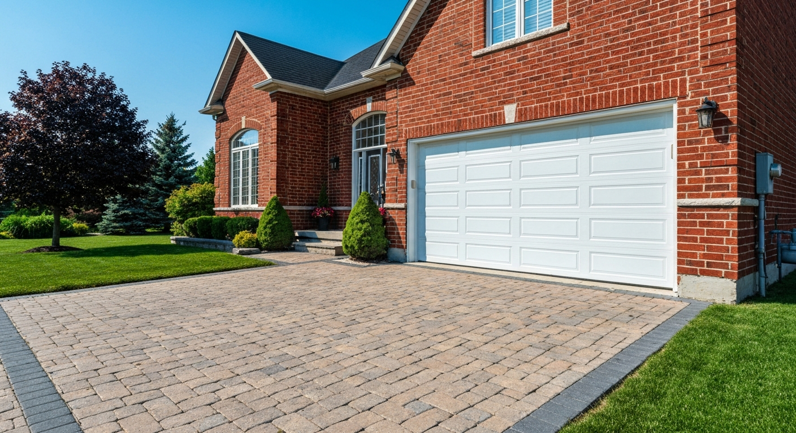
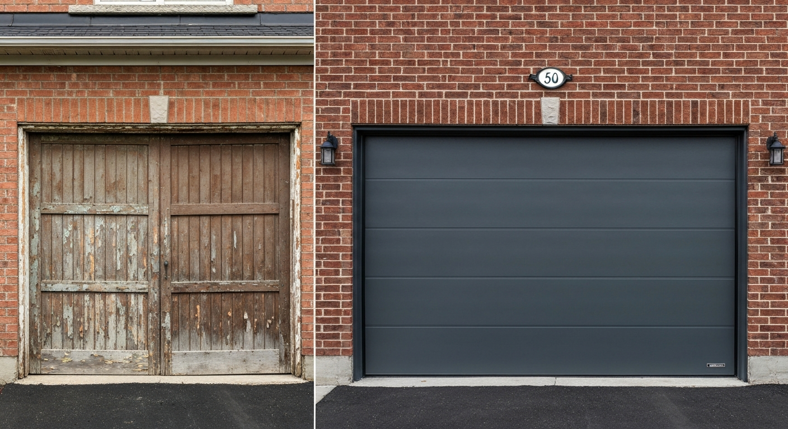
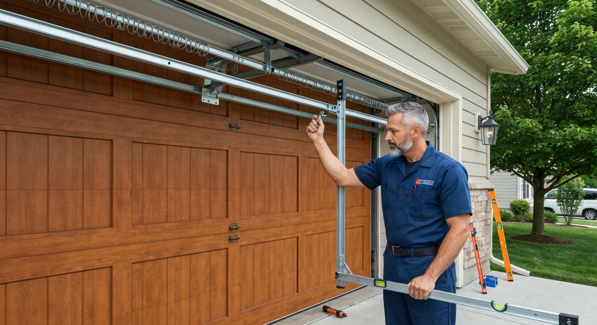
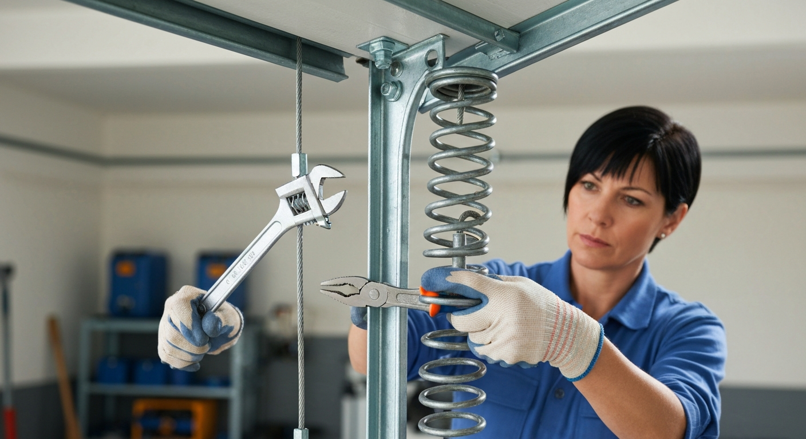
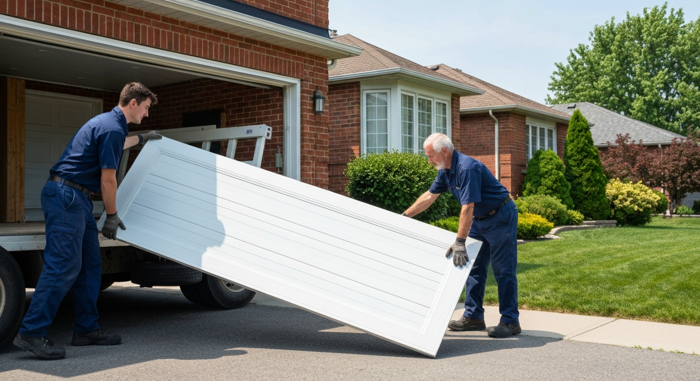

Fast, reliable garage door service across Guelph and Wellington County. Same-day repairs available.
Broken torsion or extension springs replaced same-day. We stock the most common sizes for Guelph homes.
Steel, carriage-style, and insulated garage doors from top brands. Full supply and installation.
Chamberlain, LiftMaster, Genie — we repair all brands and install smart openers with phone control.
Frayed cables and worn rollers are safety hazards. Fast replacement before a broken door leaves you stranded.
Bent tracks, damaged panels, and misaligned doors repaired without full replacement wherever possible.
Garage door stuck open or won't close? We offer emergency service 7 days a week across Guelph.





Spring, cable, and opener repairs often same-day
We service and install all major door and opener brands
Broken springs are dangerous — let us handle it
Serving Guelph & Wellington County homeowners
The garage door is the largest moving part of most Guelph homes, and it cycles thousands of times over its lifespan. Springs, cables, rollers, tracks, and openers all wear, and when they fail — often suddenly — it disrupts your day and can create a safety hazard. A broken torsion spring under tension is particularly dangerous and should never be attempted as a DIY repair.
Spring replacement is the most common garage door repair in Guelph. Torsion springs (mounted horizontally above the door) and extension springs (running along the tracks on either side) both have finite cycle lifespans — typically 10,000–15,000 cycles for standard springs, which works out to 7–10 years of normal use. We stock the most common sizes and can typically complete a replacement in under an hour.
Garage door openers have improved dramatically in the past decade. Modern units offer smartphone control (open and close remotely, get alerts if the door is left open), battery backup so you're never locked out during a power failure, and quieter belt or jackshaft drive systems. If your opener is over 10 years old and needing repairs, replacement is often better value than repair.
Insulation is worth considering for any garage attached to your home. An uninsulated steel door loses significant heat through the panel, contributing to cold floors in rooms above the garage and higher heating costs. Insulated doors — polyurethane injected between steel skins — add R-value and significantly reduce noise from the door operation itself.
Guelph winters are hard on garage doors. Steel contracts in the cold, and the seal at the bottom of the door can freeze to the floor overnight. Lubricating hinges, rollers, springs, and tracks with a proper lubricant (not WD-40, which attracts debris) before winter extends the life of every moving part. We offer annual maintenance tune-up visits that cover lubrication, balance testing, and safety reversal checks.
We serve Guelph, Fergus, Elora, Rockwood, Cambridge, and all of Wellington County.
We provide garage door services throughout Guelph and the surrounding region:
Torsion spring replacement on a standard single or double garage door in Guelph runs $180–$350, including labour and both springs (we always replace both — the second one is close to failure if the first broke). Extension spring replacement is typically $120–$220.
We strongly advise against DIY spring replacement. Torsion springs store significant tension energy and can cause serious injury if they slip during installation. It's one of the few home repairs where the professional labour cost is genuinely worth the safety benefit.
Standard torsion springs are rated for 10,000 cycles — roughly 7–10 years of normal use (opening and closing twice a day). High-cycle springs rated for 25,000–50,000 cycles are available and cost more upfront but last significantly longer.
The most common causes are misaligned safety sensors (look for a blinking light on one sensor), an obstruction in the door's path, or limit settings on the opener that need adjustment. We can diagnose and fix most closer issues on the first visit.
Repair makes sense for broken springs, opener issues, and minor panel dents. If the door is over 20 years old, severely rusted, poorly insulated, or multiple systems are failing, a new door is often better value — and a new door significantly improves curb appeal and home resale value.
Yes — we install LiftMaster and Chamberlain smart openers with myQ smartphone app control, allowing you to open, close, and monitor your garage door from anywhere. These also integrate with Google Home, Amazon Alexa, and Apple Home.
Contact us today for a free, no-obligation quote for garage door services in Guelph.